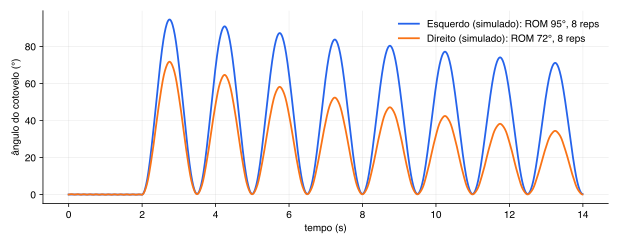

Par de braceletes com acelerômetro e giroscópio que mede os dois braços ao mesmo tempo: amplitude, tremor, repetições, fadiga e assimetria. O que já temos, o que falta e o que depende de quem.
Onde estamos hoje
Hoje a avaliação é com goniômetro e observação visual: subjetiva, um lado por vez. Os sistemas bons (Xsens, VALD, Delsys) custam de milhares a mais de US$100 mil. Não existe nada barato que meça os dois braços simultaneamente.
| Pessoa | Papel |
|---|---|
| João | Firmware (C/Arduino), pipeline Python, ML |
| Pamela (educadora física) | Protocolo clínico, validação das métricas, uso em pacientes reais |
Do sensor no braço até a métrica
| Camada | Arquivo | O que faz |
|---|---|---|
| 1 | signal.py | bias do giroscópio, correção, filtro complementar (acel + giro → ângulo) |
| 2 | reps.py | detecção de repetições, calibração adaptativa dos limiares |
| 3 | metrics.py | ROM, contagem, fadiga, tremor, assimetria |
| 4 | pipeline.py | dono do ciclo: analyze_session e bilateral_asymmetry |
| + | capture.py, clock_sync.py, validation.py | ingestão BLE, sync por RTT, comparação com referência |
Verde = verificado em sinal simulado. Nenhuma foi verificada em dado real.
| Métrica | O que mede | Verificado (simulado) | Ainda NÃO verificado |
|---|---|---|---|
| ROM | Amplitude do movimento (°) | Dentro de 10% do injetado; erro < 5° vs trajetória exata | Montagem real do sensor, aceleração linear, mocap |
| Repetições | Quantos ciclos | Contagem exata em 5 variantes (tremor forte, rápida, lenta...) | Movimento real irregular; limiares são defaults de design |
| Fadiga | Queda do pico ao longo da série | Sinal do slope correto | Magnitude do slope não conferida |
| Tremor | Potência na banda 3–12 Hz | Só comparação relativa de banda | Frequência e amplitude não recuperadas; ver alerta abaixo |
| Assimetria | (E−D)/média entre lados | Sinal certo (lado mais fraco) | Qualquer valor clínico; corte depende da Pamela |

Plano em 11 degraus (Approach B → A → C)
| Data | Marco |
|---|---|
| 03/09 | Scaffold, pesquisa de mercado, design doc aprovado, revisão de engenharia (achou bugs de BLE e a ausência de ROM/fadiga) |
| 10–11/09 | Apresentação HTML de 10 slides e repo público no GitHub |
| 24/09 | Degraus 1–6: as 5 métricas e o teste de integração sintético |
| 01/10 | Reorganização em camadas, calibração adaptativa, validação, ingestão BLE, sync por RTT, revisão do firmware; datasets reais descartados |
| 22/10 | Firmware com característica de sync (não compilado); push de 12 commits |
Ordenados por impacto
| # | Risco | Impacto | Mitigação / próximo passo |
|---|---|---|---|
| 1 | Firmware nunca compilado nem testado em hardware (incluindo o sync novo) | Alto | Compilar, gravar nos 2 ESP32, capturar 1 minuto parado |
| 2 | Sincronismo dos dois nós. O piso do erro é ~RTT/2 (alguns ms em BLE); assume atraso simétrico | Alto | Medir o erro real; se ruim, avaliar ESP-NOW nó-a-nó |
| 3 | Nenhuma validação com dado real. Datasets pagos/restritos | Alto | Captura própria com a Pamela; ideal: referência (goniômetro ou vídeo) na mesma sessão |
| 4 | Tremor mistura energia do movimento voluntário (observado na simulação) | Médio | Investigar e corrigir antes de usar clinicamente |
| 5 | Limiares de repetição calibrados só com sinal simulado | Médio | Recalibrar com os primeiros dados reais |
| 6 | Demanda comprovada? A Pamela reagiu bem, mas é interesse verbal | Médio | Uso real em sessões é o teste de demanda |
| 7 | Perda de pacote BLE e desconexão durante sessão | Médio | Já detectamos via seq_num; falta política de descarte/reconexão |
| 8 | Dados de paciente: consentimento e retenção fora do escopo do protótipo | Médio | Definir antes de capturar paciente real; repo é público, nunca versionar dado bruto |
| 9 | Tolerância de sync por métrica e critério de falha do Approach B não definidos | Baixo | Definir após os primeiros dados reais |
Duas frentes independentes agora, depois a captura
| # | Tarefa | Responsável | Depende de | Prioridade |
|---|---|---|---|---|
| 1 | Responder as 5 perguntas de protocolo (movimento, série, local do bracelete, corte de assimetria, repouso de 2 s) e informar nº/perfil de voluntários | Pamela | nada | P0 |
| 2 | Compilar o firmware, gravar nos 2 nós, testar pacote, MTU e sync | João | hardware em mãos | P0 |
| 3 | Script do hub: conectar nos 2 nós, rodar ~100 pings de sync, gravar sessão | João | 2 | P0 |
| 4 | Medir o erro real de sincronismo entre os nós | João | 2, 3 | P1 |
| 5 | Primeira captura bilateral com referência (goniômetro/vídeo) na mesma sessão | João + Pamela | 1, 2, 3 | P0 |
| 6 | Recalibrar limiares de repetição e investigar a métrica de tremor com dado real | João | 5 | P1 |
| 7 | Pamela registra "plausível / não bate" para cada métrica | Pamela | 5 | P0 |
| 8 | Definir consentimento e retenção de dados de paciente | Grupo | antes de 5 com paciente | P1 |
| 9 | Backlog: suavidade (SPARC), variabilidade entre reps, timing, sincronia bilateral, movimento compensatório; ML de anomalia | João | dados reais | P2/P3 |
Para ninguém reabrir o que já foi discutido
| Decisão | Porquê |
|---|---|
| Sequência B → A → C (validar lógica, depois MVP bilateral, depois hub/dashboard) | Reduz risco técnico antes de gastar tempo da Pamela; plataforma completa antes de validar demanda é red flag |
| Protocolo estreito (flexão de cotovelo), métricas largas (as 5 juntas) | Compartilham a mesma fusão de sensor; o artigo precisa do conjunto completo |
| Filtro complementar em vez de Madgwick | 1 grau de liberdade não justifica quaternion completo; Madgwick fica como upgrade futuro |
| Sync por RTT via hub (ping-pong) | Mantido sem dado que prove falha; ESP-NOW nó-a-nó só se o RTT não performar |
| Calibração de bias por nó antes de cada sessão (2 s parado) | Sem isso a assimetria pode medir diferença de hardware, não de paciente |
| Detecção de repetições adaptativa | Limiares fixos contaram 8 reps em vez de 5 com tremor forte |
| Pular datasets públicos (IEEE DataPort, StrengthSense, Mendeley) | Pagos, restritos à Europa ou sem dado bruto |
| Repo público | Escolha explícita; por isso: sem dado de paciente no repositório |
| github.com/jhlr/movesense | código, testes, docs |
| docs/designs/…v0-wearable-bilateral.md | design doc aprovado |
| docs/2026-10-01-perguntas-pamela.md | as 5 perguntas |
| docs/2026-10-01-approach-b-relatorio.md | validação sintética detalhada |
| REPO_STATE.md / TODOS.md | escada e backlog |